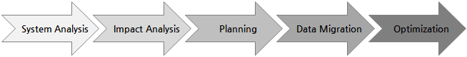

Overview
This document describes the procedure for converting Oracle DBMS to ALTIBASE HDB version 6.3.
Migration Process

| Phase | Contents | Output | Management | |
|---|---|---|---|---|
| 1st Phase
| System analysis
| Requirement analysis | System analysis report |
|
Environment analysis
|
| |||
DBMS analysis
|
| |||
Business analysis
|
| |||
| 2nd Phase | Impact analysis | Risk impact analysis | Impact report |
|
| Analysis of the relationship between the application and the database for table usage, and related matrices |
| |||
| 3rd Phase | Planning | Schedule planning establishment | Schedule |
|
| Support staffs plan establishment | ||||
| 4th Phase | Data Migration | Conversion using Migration Center -Schema and data included |
| |
| Manual conversion for non-standard schema and SP |
| |||
| Data verification |
| |||
| 5th Phase | Optimization | Configuration optimization with parameter tuning | Optimization result report |
|
| Performance optimization with SQL and procedure tuning |
| |||
{kind=link}